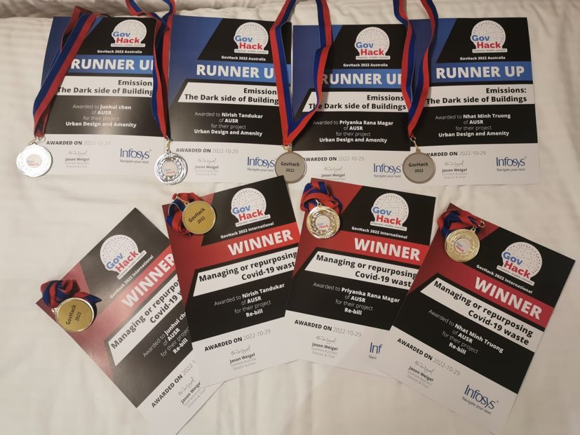

RE-BILL - Rebuild our environment post-covid - GovHack 2022
I am thrilled to share the successful business case that propelled me to win the prestigious 1st International Division prize at the GovHack 2022 competition. This business case not only showcases my strong ability to create compelling proposals but also demonstrates my keen business sense in identifying problems, challenges, and devising innovative product solutions.
Re-Bill, the product at the heart of this business case, represents a promising venture that my dedicated team and I worked on during the hackathon. We take great pride in the recognition and achievement in the GovHack competition, solidifying our belief in the potential of Re-Bill to revolutionize waste management in the healthcare industry.
Let's delve into the intricacies of the Business Case that laid the foundation for our success journey at GovHack 2022:
Project page - Re-bill
https://2022.hackerspace.govhack.org/projects/re_bill
Executive SummaryThe Managing Medical Waste project (Rebill) aims to address the environmental and cost challenges associated with handling covid-related waste in healthcare businesses. The lack of incentives for sorting and recycling covid waste leads to its improper disposal, causing harm to the environment and increased waste management costs for businesses. To tackle this issue, we propose the implementation of "Re-Bill," a government incentive platform that encourages businesses to sort and recycle covid waste while providing them with incentives and access to free covid waste management services. By utilizing datasets from purchase invoices, Re-Bill will track medical equipment related to covid usage and develop efficient waste management plans for healthcare facilities. Project GoalsWhen it comes to covid waste management, the two main words that come to mind that are considered practical and instant solutions to deal with managing covid waste are: “Sorting” and “Recycling”. While these methods may seem straightforward, implementing them is no simple task. For health sector businesses, with no incentives in sorting out covid waste from general waste, disposable clinical waste ends up in landfill with other general waste, and these medical wastes such as masks, plastic gloves, PPE clothes… can take years, if not centuries, to decompose. This represents a detrimental effect on the environment and it has a serious impact on communities that are near poorly managed landfills. For businesses that are conscious of covid waste and its effect, they do not have many options to deal with such waste. Private companies charge an expensive waste management fee for covid-related waste. In addition, by not segregating, the covid waste ends up in general waste and therefore increases the overall cost of waste management for the business because their general waste bins get filled much quicker. Healthcare facilities are inadequately equipped to manage their current waste burdens, let alone the extra COVID-19 load. Health professionals may be exposed to harmful microbes, burns, and needle stick injuries as a result of this. For those reasons, we identify the two important goals that we need to achieve:
The real underlying questions that are hindered in these two goals are:
The current lack of incentives for sorting and recycling covid waste results in improper disposal and increased waste management costs. Additionally, healthcare facilities are inadequately equipped to handle the growing covid waste load, posing risks to health professionals and the surrounding communities. Product Solution - Re-BillIntroducing Re-Bill, a platform for businesses to submit invoices of covid purchases to receive incentives from the government while gaining access to free covid waste management service. Re-Bill enables better sorting practice and encourages recycling of medical waste by utilizing existing datasets that every company has - their purchase invoices. Re-Bill is an innovative platform that incentivizes businesses to sort and recycle covid waste. The key features of Re-Bill are as follows:
Product Benefits
In conclusion, Re-Bill offers a wide range of benefits that go beyond incentivizing waste sorting and recycling. From regulatory compliance and staff safety to positive environmental impact and data-driven insights, the platform serves as a holistic solution for efficient and responsible medical waste management. Embracing Re-Bill not only empowers healthcare businesses to take a proactive approach to waste handling but also contributes to a sustainable and healthier future for all. Pricing ModelRe-Bill charges its customers based on a percentage of the government incentives provided for submitting covid-related purchase invoices through the platform. For every $1000 worth of covid-related purchases submitted, businesses will receive a pro-rata voucher for free waste management services. Re-Bill's revenue will be generated by retaining a small percentage of this government incentive as its service fee. The remaining amount will be utilized to cover the cost of providing free waste management services and support the platform's sustainability. Benefits of the Pricing Model
Financial ProjectionRe-Bill's unique revenue generation model is projected to bring in substantial income for the platform. With an estimated 100 healthcare businesses on board within the first year, Re-Bill is expected to generate a revenue of $500,000. This revenue will be derived from the government incentives provided to businesses for submitting their covid-related purchase invoices through the platform. One of the primary goals of Re-Bill is to reduce waste management costs for healthcare businesses. By encouraging proper sorting and recycling of covid waste at the point of disposal, the platform is projected to increase the sorting and recycling rate by a significant 40%. As a result, businesses can expect to achieve a remarkable 25% reduction in waste management costs. This translates to considerable cost savings for each participating healthcare facility, improving their bottom line. Re-Bill promises a swift return on investment for businesses. With the reduction in waste management costs and the revenue generated through government incentives, the initial investment in implementing and training on the Re-Bill platform is expected to be recovered within a short payback period of just six months. This rapid payback period ensures that businesses can quickly start benefiting from the financial advantages of Re-Bill, further incentivizing them to participate in the platform. The financial projections for Re-Bill indicate its potential for scalability and growth. As more healthcare businesses recognize the financial and environmental benefits of participating in the platform, the number of participants is expected to increase exponentially. This growth trajectory will further enhance the platform's revenue generation and solidify its position as a leading solution in the medical waste management market. Environmental Impact and Long-Term Prospects Beyond the immediate financial gains, Re-Bill's positive environmental impact offers long-term benefits for the healthcare industry and communities. By reducing the amount of covid waste ending up in landfills and promoting recycling practices, the platform plays a significant role in improving environmental sustainability. As businesses become more conscious of their environmental footprint, they attract environmentally-minded customers, potentially leading to increased patronage and revenue growth in the long run. ConclusionRe-Bill presents a compelling financial case for healthcare businesses seeking to improve their waste management practices. The platform offers significant cost savings, revenue generation, and positive environmental impact, positioning Re-Bill as a valuable and strategic investment. By adopting Re-Bill, businesses not only improve their financial performance but also contribute to a cleaner and more sustainable environment, setting them apart as responsible and forward-thinking leaders in the healthcare industry. The financial projections and benefits of Re-Bill demonstrate its potential to transform medical waste management, benefiting businesses, communities, and the environment alike. |
Participating in GovHack was an exhilarating experience, immersing my team in an intense hackathon competition. The dedication and hard work we put in truly paid off, as our efforts were met with remarkable success. Reflecting on this experience and the image below always fills me with a sense of pride and accomplishment.
